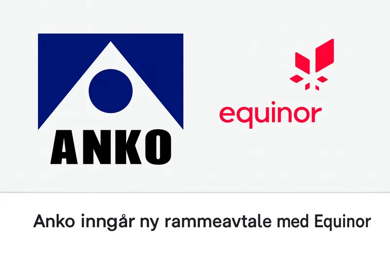

Selskapet
Sidan 1975
Anko AS har sidan 1975 levert tenester til prosjekt i inn- og utland, og lever av fornøyde kundar som stadig vender tilbake. Selskapet er rådgivande ingeniører med oppmåling, 3D-skanning og posisjonsmåling som fag.
Vi er til stade i sju regionar i Noreg, har eiga avdeling for maritime oppdrag (Anko Maritime) og dotterselskapet Anlegg og Maskin Support AS. I tillegg er vi representert i Krakow i Polen.
- Org.nr 980 538 613
- Sju regionar i Noreg
- Kontor i Krakow, Polen

Regionar
Lokal tilstadevere
Stavanger
Vest
Bergen
Vest
Trondheim
Midt
Harstad
Nord
Oslo
Aust
Østfold
Aust
Kristiansand
Sør
Krakow
Polen
Vil du jobbe hos Anko?
Send ein open søknad til job@anko.no.